Karnataka
- Home
- Food
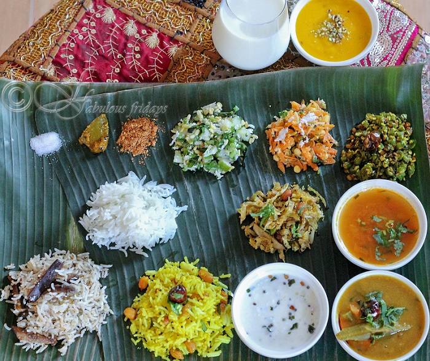 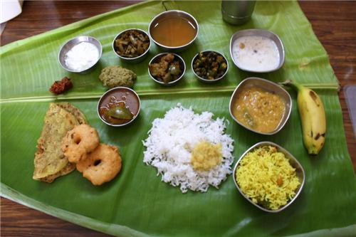
- Fashion
 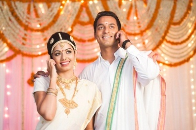
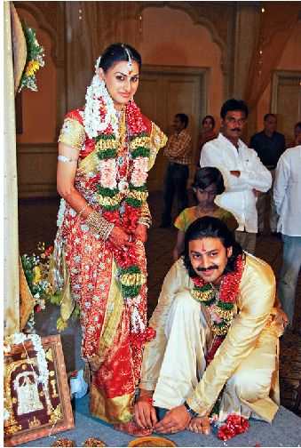
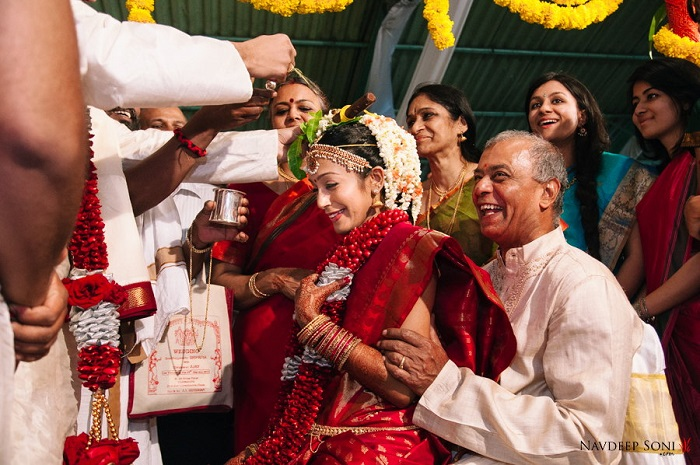
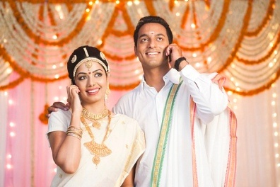
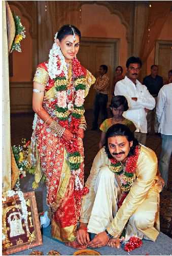
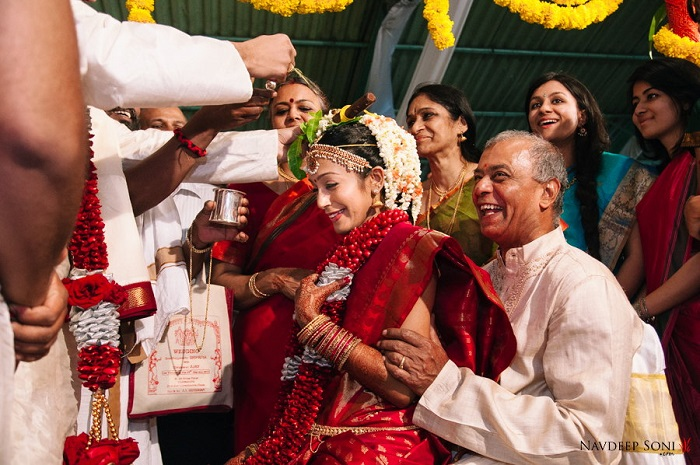
- Festival
- Hampi Festival
- Pattadakal Dance
- Karaga
- Mahamastakabhisheka
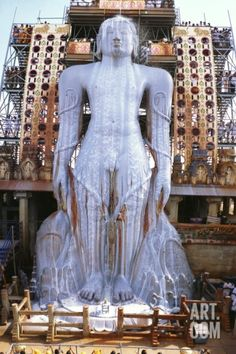
Mahamastakabhisheka
A very important Jain festival that is held every once in 12 years in the town of Shravanabelagola in Karnataka,India. The festival sees the anointing the 17.3736 metres tall statue of Siddha Bahubali. As this festival begins, the devotees sprinkle blessed holy water on the people come to participate in the festival. Then, the statue is anointed or bathed with liquids such as milk, sugarcane juice, saffron paste, and powder of sandalwood, turmeric and vermilion. The Jain nuns climb up the Vindhyagiri hills to reach the enormous statue. Offerings made to the statue are petals, gold and silver coins, precious stones. In 2006, the ceremony ended with the shower of flowers from a helicopter onto the statue and people jumped up to catch those flowers as a blessing. This festival was last celebrated in 2006 and will next be celebrated in 2018.
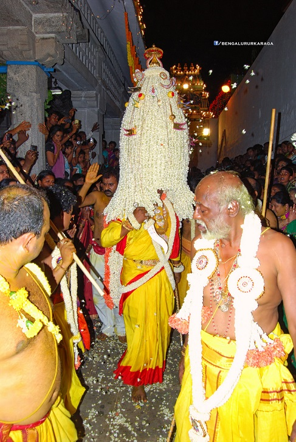Karaga
Performed on a full moon day the Karaga is a folk dance performed as a ritual dedicated to Draupadi. It is one of the oldest festivals performed in the Bengaluru. It is led by the men because in the last part of Mahabharatha the demon Tripurasura was still alive and Draupadi took the form of a shakti goddess and created soldiers called Veerakumaras. After the war, the soldiers asked her to stay but she couldn’t, so she promised to come visit them on the first full moon of the Hindu Calendar. - Mahamastakabhisheka
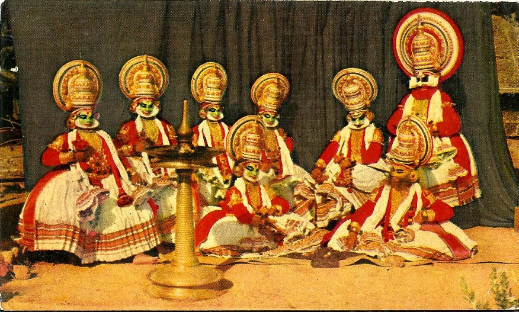Pattadakal Dance
The Pattadakal dance festival is organised every year on a very large scale by the Karnataka Government in the month of January to honour and celebrate of all its famous temples. The Pattadakal village is situated 20 km from Badami in Karnataka. It is a world heritage centre and famously known for its many well-constructed temples as it was the second capital of the chalukya kings. Most of these temples at the Pattadakal village are devoted to Lord Shiva with beautiful structure and carvings on them. The largest of the all the temples are Virupaksha and Mallikarjuna. - Karaga

Hampi Festival
Hampi festival which is also known as Vijaya Utsav is a famous festival to celebrate the birthday of the ancient poet Purandaradasa who lived in Hampi and is normally celebrated in the month of either October or November over a period of 3 days. This festival attracts people from all over the world. - Pattadakal Dance
- Hampi Festival